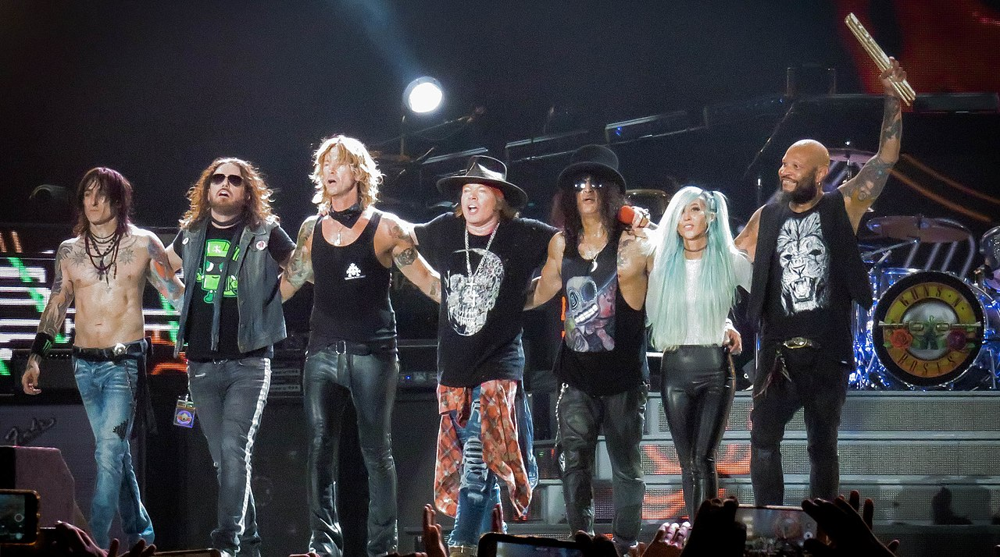

O grupo foi formado no início de 1985 pelos membros do Hollywood Rose Axl Rose (vocais) e Izzy Stradlin (guitarra rítmica); e membros do L.A. Guns Tracii Guns (guitarra solo), Ole Beich (baixo) e Robbie Gardner (bateria). A nova banda criou o seu nome a partir da combinação de dois dos nomes dos membros do grupo. Depois de pouco tempo (várias fontes indicam que apenas dois ou três shows foram feitos com os integrantes Guns, Beich & Gardner), o baixista Ole Beich foi substituído por Duff McKagan, enquanto a falta de Tracii Guns nos ensaios levou à sua substituição por Slash. Slash tinha tocado com McKagan no Road Crew e com Stradlin durante um curto período no Hollywood Rose. A nova formação se reunira rapidamente, mas, pouco antes de embarcar em uma turnê curta de Sacramento, na Califórnia, para Seattle, em Washington, o baterista Rob Gardner saiu e foi substituído por um amigo de Slash, Steven Adler (que também era do Road Crew). A banda, que continuou a ser chamada Guns N' Roses, mesmo depois da partida de Tracii Guns, estabeleceu a sua primeira formação estável até o chamado "Hell Tour".
Por conta de brigas e desentendimentos a banda foi se desmanchando, fazendo com que entrassem novos membros para que os antigos fossem substituidos, só sobrando Axl da sua formação original. Depois de um longo tempo com integrantes substitutos, no ano de 2016, foi anunciada a volta de dois dos integrantes classicos da banda, sendo eles Slash e Duff. Sendo assim, atualmente, a banda é formada por Axl (vocais), Slash (guitarra solo), Duff McKagan (baixo), Richard Fortus (guitarra rítmica), Frank Ferrer (bateria), Dizzy Reed (teclados, piano, percussão) e Melissa Reese (teclados). A banda está a quase quinze anos sem lançar nenhum album novo, apenas liberando alguns singles mas os fãs ainda esperam por uma volta da banda.
